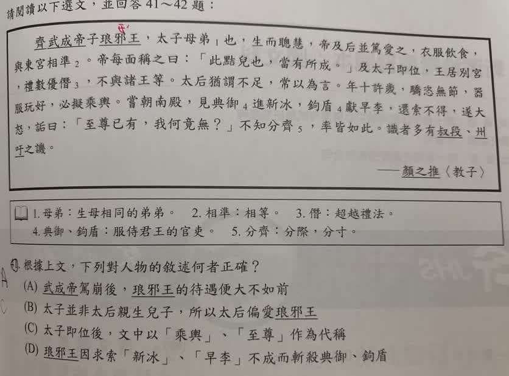

分享原卷｜第41題
完整原題
作答所需文章／材料
齊武成帝子琅邪王，太子母弟¹也，生而聰慧，帝及后並篤愛之。衣服飲食，與東宮相準²。帝每面稱之曰：「此黠兒也，當有所成。」及太子即位，王居別宮，禮數優僭³，不與諸王等。太后猶謂不足，常以為言。年十許歲，驕恣無節，器服玩好，必擬乘輿。嘗朝南殿，見典御⁴進新冰，鉤盾⁴獻早李，還索不得，遂大怒，詬曰：「至尊已有，我何竟無？」不知分齊⁵，率皆如此。識者多有叔段、州吁之譏。 ——顏之推〈教子〉 注釋： 1. 母弟：生母相同的弟弟。 2. 相準：相等。 3. 僭：超越禮法。 4. 典御、鉤盾：服侍君王的官吏。 5. 分齊：分際、分寸。根據上文，下列對人物的敘述何者正確？
(A) 武成帝駕崩後，琅邪王的待遇便大不如前
(B) 太子並非太后親生兒子，所以太后偏愛琅邪王
(C) 太子即位後，文中以「乘輿」、「至尊」作為代稱
(D) 琅邪王因求索「新冰」、「早李」不成而斬殺典御、鉤盾
先想一想，再查看答案、解說與原圖
原卷作答：A；紅筆C
正確答案：(C)。太子即位成為皇帝，乘輿與至尊在這段文字裡都借指這位皇帝。
逐項解析
| 選項與原句 | 判讀 | 句意與判斷理由 |
|---|---|---|
| (A) 武成帝駕崩後，琅邪王的待遇便大不如前 | 不選 | 太子即位後仍禮數優僭、不與諸王等，不能說待遇大不如前。 |
| (B) 太子並非太后親生兒子，所以太后偏愛琅邪王 | 不選 | 太子母弟指出兩人同母，太子也出自同一位母親。 |
| (C) 太子即位後，文中以「乘輿」、「至尊」作為代稱 | 應選 | 太子即位成為皇帝，乘輿與至尊在這段文字裡都借指這位皇帝。 |
| (D) 琅邪王因求索「新冰」、「早李」不成而斬殺典御、鉤盾 | 不選 | 原文只寫大怒與責罵，沒有寫斬殺官吏，屬於添加情節。 |
詳細說明與解題步驟
先整理關係：武成帝是父親；太子與琅邪王是同母兄弟。太子後來即位成為皇帝，故後文「必擬乘輿」、「至尊已有」都是以皇帝的待遇作比較，選C。
分段白話：
①琅邪王是武成帝的兒子，也是太子的同母弟弟。他天生聰明，父母都很寵愛他；衣食標準與太子相同，父親常當面誇他將有成就。
②太子即位後，他住在別宮，待遇優厚到超過應有分際，與其他諸王不同；太后還嫌不夠，經常提出要求。
③他十來歲時驕橫放縱，器物、衣服和玩賞物都要比照皇帝。
④他入宮看見官員進獻新冰與早熟李子，回去索取不到，便怒罵：皇上已經有了，我為何竟沒有？
⑤不懂分際的行徑大多如此。有見識的人便用叔段、州吁的故事譏評他。
關鍵詞：東宮原指太子居所，文中借指太子；乘輿原指天子的車駕，文中借指皇帝；至尊是對皇帝的尊稱。詬是責罵，不能擴大成處死。
原AI把叔段、州吁概括成兩人都弒兄篡位、身死國滅，並不精確。共叔段叛亂失敗後出奔；不能把州吁弒君的情節一併套在他身上。本段重點是用驕縱失教的前例警惕琅邪王，不需要附加相同結局。
核對註記：已依原卷或完整文字核對並獨立解題；對應教材課次未確認，歸綜合。
原圖（僅本題）
